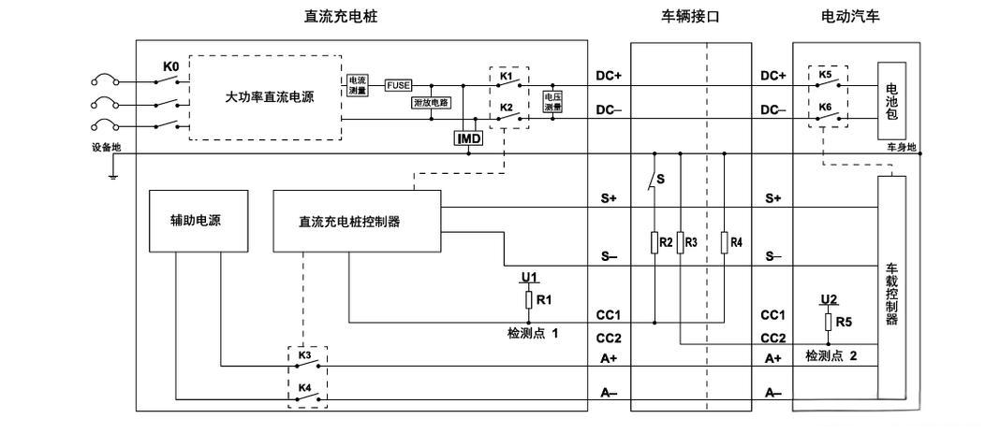

现象1：插枪后不认枪（查 CC2 回路）
| 测量点 | 状态 | 正常值 |
|---|---|---|
| 车端 CC2↔PE 电压 | 不拔枪 | 6V |
| 车端 CC2↔PE 电压 | 拔枪 | 12V |
| 枪头 CC2↔PE 电阻 | 拔枪 | 1kΩ |
现象2：认枪但不握手（查 CAN 线）
| 测量点 | 状态 | 正常值 |
|---|---|---|
| S+(CANH)↔S-(CANL) | 下电休眠 | 60Ω |
| CANH↔PE | 下电 | 不导通 |

* 点击图片可全屏放大查看。看懂这张图，需要理解分压原理和车桩交互时序。
如果按上述步骤查了都正常，但就是无法充电，大概率是 BMS 与 OBC 底层报文交互问题，需要用 CAN 盒抓包解析。
想系统学习底层报文解析与高压维修逻辑？
保存二维码，加微信获取资料